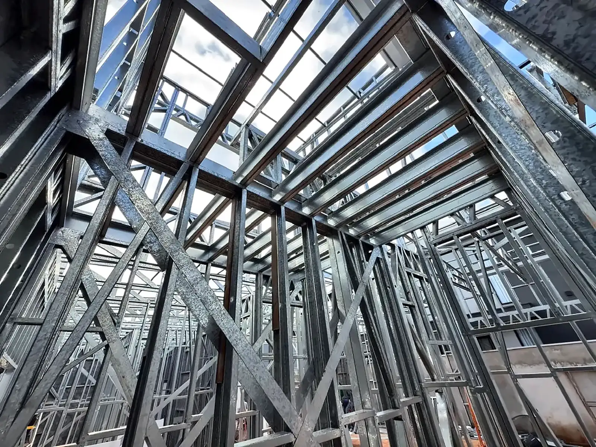

Steel frame no mundo
O light steel frame — perfis de aço galvanizado formados a frio — nasceu nos Estados Unidos há quase um século. Hoje estrutura hotéis, hospitais, escolas e casas na América do Norte, no Japão, na Austrália e na Europa. Esta é a sua história, em dados e com fontes.
Primeiro edifício documentado com estrutura de aço formado a frio, em Lynchburg (EUA). [1]
Primeira norma de cálculo para perfis leves de aço, publicada pelo AISI nos EUA. [1]
dos edifícios não residenciais dos EUA usam perfis de aço formado a frio. [1]
reciclável: os perfis novos já levam de 30 a 40% de aço reciclado. [7]
O que é o light steel frame
É um sistema estrutural de perfis de aço galvanizado de 0,8 a 2,3 mm de espessura, formados a frio. [8] Montantes, guias e vigas formam painéis de parede, entrepisos e coberturas, fechados com placas cimentícias, de gesso ou OSB, com isolamento térmico e acústico no interior.
Nos Estados Unidos ele é chamado de cold-formed steel framing (CFS). É construção a seco: sem cura nem entulho, com peças que chegam cortadas e numeradas da fábrica. Por isso a obra é mais rápida e mais previsível.
Um século de aço leve
- c. 1925
Virginia Baptist Hospital, em Lynchburg (EUA): primeiro uso documentado do aço formado a frio em um edifício, com vigas de perfis C duplos. Em uma reforma recente, elas ainda suportavam as cargas. [1]
- 1933
Na Exposição Universal de Chicago, “A Century of Progress”, três casas com estrutura de aço — General Houses, Armco-Ferro e Stran-Steel — são apresentadas como a casa do futuro. [1]
- 1939
O American Iron and Steel Institute (AISI) financia uma pesquisa na Universidade Cornell para entender como trabalha o aço de chapa fina. [1]
- 1946
O AISI publica a primeira especificação para o cálculo de perfis leves de aço. Desde então, o sistema é dimensionado por norma. [1]
- 1948–1950
A Lustron fabrica em série 2.498 casas de aço. Vai à falência em 1950 com mais de 8.000 pedidos não entregues: havia demanda, faltou escala industrial. Cerca de 1.500 ainda estão de pé. [5]
- Anos 50
Os parafusos autobrocantes substituem os perfis “pregáveis” e chegam as parafusadeiras: a montagem fica rápida e precisa. [1]
- Anos 60
Com os prédios altos, o aço leve entra em fachadas-cortina, fachadas com tijolo aparente e paredes de shafts: é leve e incombustível. [1]
- 1994
Depois de anos de preços altos e instáveis da madeira, um estudo para o Departamento de Habitação dos EUA (HUD) compara obras reais: as paredes de aço custam só 7% a mais que as de madeira, por causa de uma mão de obra ainda pouco treinada. [4]
- 1995
Terremoto de Hanshin-Awaji (Kobe, Japão): de cerca de 50.000 moradias temporárias, perto de 3.000 são erguidas com steel frame importado. Em 1996, seis siderúrgicas japonesas criam um comitê para desenvolver o sistema. [6]
- 2004
81% das paredes internas construídas nos EUA já usam perfis de aço. [1]
- 2005
O Brasil publica a norma ABNT NBR 15253 para perfis de light steel framing. O sistema havia chegado ao país no início dos anos 90. [8]
- 2011
Por volta de 2011, a tonelagem de montantes estruturais supera nos EUA a de não estruturais: o aço leve deixa de ser só divisória e passa a sustentar edifícios. [1]
- 2016
A Duosteel começa a projetar, fabricar e montar estruturas em aço no Brasil e no Paraguai, combinando aço pesado e light steel frame.
- 2025
Cerca de 5.000 casas unifamiliares concluídas nos EUA têm estrutura de aço: 25% a mais que em 2024. [2]
Onde o sistema virou indústria
Nos EUA, o aço formado a frio é, acima de tudo, um sistema de obra comercial: entre 30 e 35% dos edifícios não residenciais o usam na estrutura ou nos fechamentos. [1] É comum em hotéis, prédios residenciais de média altura, escolas, hospitais e lojas.
O mercado amadureceu com normas próprias e fabricação industrial. Hoje, os montantes de alta resistência (com aço de maior limite de escoamento e nervuras de enrijecimento) são 90% dos usados no país e resolvem a mesma carga com chapa mais fina. [1]
Na casa unifamiliar, por outro lado, a madeira domina: em 2025, 94% das casas concluídas foram de madeira e 0,5% de aço, cerca de 5.000, 25% a mais que no ano anterior. [2] No Brasil e no Paraguai a comparação é outra: aqui o steel frame não concorre com a madeira, e sim com a alvenaria e o concreto, e é aí que contam o prazo curto e a obra seca.
Como outros países usam
Japão
Depois do terremoto de Kobe, as siderúrgicas desenvolveram o sistema e o incorporaram à Lei de Normas de Edificação no início dos anos 2000. Até 2005 foram construídas 2.157 edificações, com cerca de 20.000 unidades. Um prédio residencial de três pavimentos em steel frame pesa cerca de 100 kg/m²; um de concreto armado, cerca de 1 t/m². [6]
Austrália
Usa estruturas de aço leve em casas desde os anos 40. Elas são especialmente populares em regiões com alto risco de cupins, embora a casa continue precisando de proteção contra eles. [7]
Europa e Nova Zelândia
Junto com EUA, Japão e Austrália, são os mercados onde o sistema é mais difundido, segundo o Inmetro. [8]
Brasil
O light steel frame chegou no início dos anos 90 e tem norma própria desde 2005. Em 2010 representava cerca de 1% do mercado da construção: um sistema ainda novo diante da alvenaria. [8]
Paraguai
A Duosteel oferece light steel frame no Paraguai, com engenharia e equipe de montagem próprias. No Brasil, já aplicou o sistema em casas e salas comerciais, como a casa em light steel frame em Foz do Iguaçu.
Um material que volta ao ciclo
do aço é reciclável
do aço já é reciclado
de aço reciclado nos perfis novos
menos energia para reciclar aço do que para produzi-lo do zero
Fonte: Governo da Austrália, Your Home. [7]
Light steel frame em obras da Duosteel


Fontes
- Steel Framing Industry Association (SFIA) — History of cold-formed steel
- NAHB, Eye on Housing — Wood Framing Continues to Dominate Single-Family Construction (2026, U.S. Census Bureau data)
- BuildSteel.org — Cold-Formed Steel Framing Advances Mid-Rise Hotel Construction (Element Hotel, Richmond)
- HUD / NAHB Research Center — Alternative Framing Materials in Residential Construction: Three Case Studies (1994)
- Wikipedia — Lustron house
- Nippon Steel Technical Report No. 97 (2008) — Light-gauge steel-framed houses in Japan
- Australian Government, Your Home — Lightweight framing
- Inmetro — Análise de impacto regulatório: perfis de aço formados a frio para light steel framing (2011)
Dados consultados em novembro de 2026.